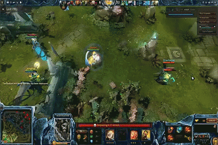
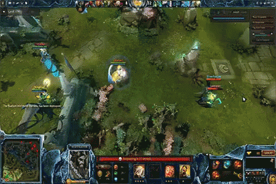
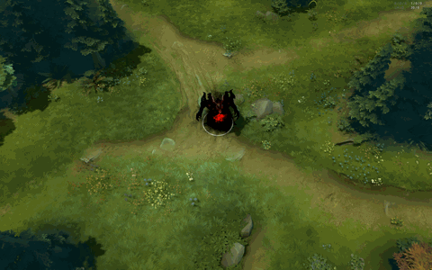
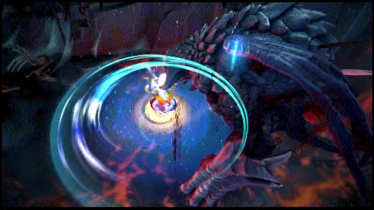
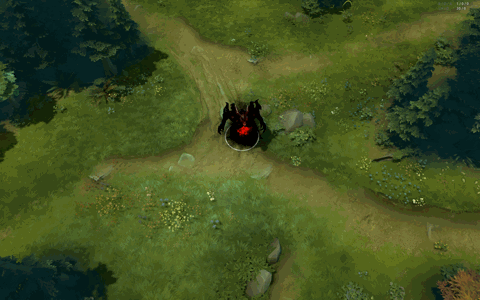
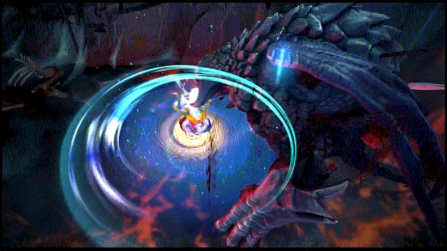

Dota 2 — компьютерная многопользовательская командная игра в жанре multiplayer online battle arena, разработанная корпорацией Valve. Игра является продолжением DotA — пользовательской карты-модификации для игры Warcraft III: Reign of Chaos и дополнения к ней Warcraft III: The Frozen Throne. Игра изображает сражение на карте особого вида; в каждом матче участвуют две команды по пять игроков, управляющих «героями» — персонажами с различными наборами способностей. Для победы в матче команда должна уничтожить особый объект-«крепость», принадлежащий вражеской стороне, и защитить от уничтожения собственную «крепость». Dota 2 работает по модели free-to-play с элементами микроплатежей. Разработка игры началась в 2009 году, когда компания Valve приняла на работу основного разработчика DotA — IceFrog, а летом 2010 года подала заявку на регистрацию этой торговой марки. 13 октября 2010 года на игровом портале Game Informer игра была анонсирована к выходу в 2011 году. 15 августа 2011 года в официальном блоге был опубликован трейлер к игре. Dota 2 вышла в июле 2013 года после того, как два года находилась в стадии бета-тестирования. Изначально Dota 2 была выпущена на игровом движке Source, после чего в 2015 году была портирована на Source 2, став первой работающей на нём игрой. В Dota 2 предусмотрена возможность создавать пользовательские режимы игры, оформление карты и косметические предметы для героев, после чего добавить их в Dota 2 при помощи Steam Workshop. Dota 2 является одной из наиболее популярных игр в Steam и получила в целом положительные отзывы критиков за игровой процесс, качество производства и сохранение положительных сторон своей предшественницы. Среди основных недостатков игры была отмечена сложность обучения. Dota 2 является активной киберспортивной дисциплиной, в которой профессиональные команды со всего мира соревнуются в различных лигах и турнирах. Премиум-турниры по Dota 2 имеют призовые фонды в миллионы долларов, не раз становившиеся крупнейшими в истории киберспорта. Самый крупный турнир по игре — The International, ежегодно проводимый Valve. Начиная с сезона 2017/18 Valve также организует Dota Pro Circuit — профессиональный сезон, проводящийся в течение года. Крупные профессиональные турниры по Dota 2 транслируются на видеостриминговых сервисах, иногда набирая свыше миллиона зрителей одновременно. Людей, играющих в Dota 2, часто называют «дотерами».
phantom assasin
- Stifling Dagger - бросает кинжал, который замедляет скорость передвижения врага, наносит ему физический урон в размере 25%/40%/55%/70% + 50% урона от атаки героя, а также накладывает эффекты предметов и способностей.
- Phantom Strike - герой телепортируется к выбранному существу и, если это противник, получает дополнительную скорость атаки.
- Blur - герой сосредотачивается на себе, что позволяет ему уклоняться от атак. Применение способности размоет очертания владельца, делая его невидимым, если рядом нет вражеских героев.
- Coup de Grace - ультимативная способность,герой оттачивает свои боевые способности, получая шанс совершить сокрушительную критическую атаку по врагу. Способность Stifling Dagger получает такой же шанс.
Queen of pain
- Shadow Strike - бросает кинжал, который наносит урон при попадании и отравляет цель на 15 сек. Жертва передвигается медленнее и каждые 3 сек. получает урон от яда.
- Blink - телепортация на короткую дистанцию, позволяющая ворваться в схватку или быстро из неё сбежать.
- Scream of Pain - герой издаёт пронзительный вопль, нанося урон всем врагам поблизости
- Sonic Wave - ультимативная способность,создаёт перед героем гигантскую звуковую волну, отталкивающую врагов и наносящую им огромный урон
Necrophos
- Death Pulse - герой выпускает вокруг себя волну смерти, которая наносит урон врагам и исцеляет союзников.
- Ghost Shroud - герой открывает связь с миром усопших, замедляя врагов вокруг. В этой форме он не может атаковать, получает повышенный магический урон, но защищён от физических атак и быстрее восстанавливает свои здоровье и ману
- Heartstopper Aura - герой останавливает сердца врагов вокруг, отчего они постепенно теряют часть максимального здоровья. Также на 0,5 сек. ускоряет восстановление здоровья и маны за каждое убитое существо
- Reaper's Scythe - ультимативная способность,оглушает выбранного вражеского героя, а затем наносит ему урон, пропорциональный отсутствующему у него здоровью. Герой, убитый этой способностью, возрождается на 15/25/35 сек. дольше обычного. Убийство врага под действием этой способности засчитывается её владельцу.
Juggernaut
- Blade Fury - герой крутится в вихре сокрушительных ударов клинком, становясь невосприимчивым к магии и нанося урон врагам поблизости.
- Healing Ward - призывает тотем, лечащий всех союзников неподалёку и передвигающийся со скоростью . Объём лечения зависит от максимального здоровья союзника. Действует 25 сек.
- Blade Dance - дает герою шанс нанести атакой критический урон.
- Omnislash- ультимативная способность, герой прыгает к указанному врагу, а затем с повышенной скоростью атакует его и ближайших противников. На время действия способности герой становится неуязвимым.
История
Сёстры Вуали, считающие убийство священной частью естественного цикла жизни, находят новых воспитанников в гаданиях. О своих жертвах сёстры узнают в медитации и пророческих изречениях. Они не принимают контрактов, и, похоже, не преследуют жертв из-за политики или корысти.
Их убийства не выглядят частью какого-то замысла, и могут показаться не связанными между собой: сегодня жертвой станет человек с великой властью, завтра — крестьянин или копатель колодцев. Какой бы между убийствами ни было связи, её знают лишь сёстры. Они считают убитых жертвенным даром, а смерть от рук ордена — большой честью.
Не ведающие своей личности, взращённые лишь на устоях ордена, убийцы легко заменяют друг друга, и число их неведомо. Возможно, их много; возможно, их единицы. Что лежит под вуалью — тайна без ответа. И лишь изредка эта сестра, когда никто не слышит, поднимает свою вуаль, чтобы нарушить запрет, прошептав своё имя: Мортред.
Phantom Assassin — это герой с ближним типом атаки, основным атрибутом которого является ловкость. Первая способность, Stifling Dagger, бросает кинжал, наносит зависящий от урона героя физический урон и замедляет врага. Вторая способность, Phantom Strike, телепортирует к вражескому или союзному юниту и дает бонус к скорости атаки, если это противник.
Третья способность, Blur, даёт Мортред возможность войти в состояние невидимости, из которого её может вывести только близкое нахождение вражеского героя или строения, а также даёт постоянный шанс уклонения от физической атаки. Пассивная ультимативная способность, Coup de Grace, дает шанс нанести критический удар по врагу. Способность Stifling Dagger получает такой же шанс крита.
 

 


